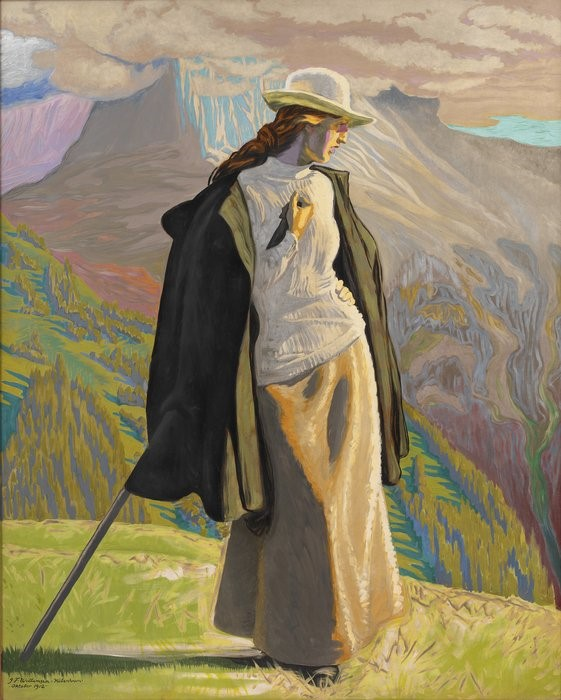

2015-09-23
自從2008年，丹麥國家藝術館(Statens Museum for Kunst)獲得Nordea-fonden提供大量資金後，他們便開始進行館藏數位化。丹麥國家藝術館的館藏主要分成三部分：繪畫雕刻皇家館藏(約10500件)、圖像藝術皇家館藏(約245000件)、石膏模型皇家館藏(約2500件)，主要來自丹麥皇室的蒐集，作品年代可以溯及至16世紀中，三分之二的館藏都屬於公眾領域。
丹麥國家藝術館從中選了160幅經典公眾領域畫作及100支與這些作品有關的影片，將其數位化後於線上開放取用。相較耶魯大學、華盛頓的國家藝術館、荷蘭Rijksmuseum，這樣的規模很小，只是一個初步嘗試。
在Sharing is caring 2014這份報告中，丹麥國家藝術館分享了他們從數位化館藏到開放分享的經驗。其中提到，博物館收取公眾領域作品圖像費用，一方面是希望能獲得進一步數位化的經費，另一方面則是避免因缺乏控制導致作品被誤用。雖然並非所有使用者都會誤用，但是數位化提升誤用的機會，就會使文化機構產生未雨綢繆之心。
然而，限制這些作品的近用其實有違身為公眾文化機構的存在目的，而且會讓博物館失去機會成為使用者學習藝術作品時率先拜訪的中心單位，無異於自行將有興趣的使用者推開，讓他們無法使用具有權威的作品來源。
起初，丹麥國家藝術館選擇以「創用CC 姓名標示」授權這些館藏，使用者可以免費下載和任意改變這些高解析度畫作，甚至能拿來營利，但是必須標示作品來自丹麥國家藝術館。現在在他們的網站上，雖然為高品質數位公眾領域作品標上「公眾領域貢獻宣言CC0」，不過，在圖像下載的說明頁上，仍希望使用者能著名出處及作品作者姓名。
丹麥國家藝術館表示，他們認同公眾領域憲章裡說的「公眾領域知識的數位化並不會形成新的權利」，也知道將不受著作權保障的公眾領域作品進行額外授權很矛盾，但是他們希望藉此養成使用者記得標示出處的習慣，也讓使用者有機會知道原始館藏在哪並進而使用。況且，採取開放授權，其實是文化機構從「保留所有權利」到「保留部分權利」的重要一步，也是目前許多機構開放館藏的實驗性第一步。
2012年4月丹麥國家藝術館開放圖像下載後，當年便有7400人至少下載過一幅作品，其中百分之34的使用者來自國外，而且這些圖像已經被用於維基百科上27種不同語言的544篇文章中。除了增加館藏的使用者，丹麥國家藝術館也因為早期採取開放授權及釋出高品質圖像而吸引其他組織的興趣。與此同時，館方原本的圖像銷售業績並未受到影響，甚至還些微上升。

(丹麥國家美術館提供高品質的圖畫下載，網站上也有串聯起這些作品脈絡的文章介紹。)
除了單純提供公眾領域圖像下載，丹麥國家美術館還設計了一些吸引使用者參與的計畫。2013年，他們和丹麥其他11間美術館合作，展開一個共享的博物館行動平台計畫HintMe，希望能透過行動裝置讓下個世代使用者分享和闡釋公眾領域作品。參與計畫的博物館都要以創用CC授權分享數位館藏，並讓使用者參與平台的概念與內容發展。HintMe並未開發一個新的平台，而是直接使用twitter，在圖像以創用CC授權的情況下，使用者可以任意轉發和混搭這些公眾領域作品，在作品下方發表自己的觀點。
同年，丹麥國家美術館和哥本哈根的捷運公司及在地居民合作，由年輕人藝術實驗室(Young People’s Laboratories for Art)善用開放圖像，混搭後重新繪製在捷運的牆上。混搭數位作品對於年輕人而言是件很自然的事情，但是長輩一開始很難接受，認為這樣做有辱原創作。因此，藝術家和在地居民就此展開了一場對話和妥協。丹麥國家藝術館之前從來沒有想過，竟然使用者也會擔心這些開放後的畫作會被誤用。透過開放數位化館藏，讓定義「藝術是什麼」及「藝術可以用來做什麼」的權力交給一般大眾。由這個計畫中他們開始了解公眾到底希望如何使用這些數位化的文化遺產，以及了解他們重新創造的過程。
丹麥國家藝術館前館長Karsten Ohrt有言：「丹麥國家藝術館就像其他博物館一樣，都是文化遺產的守門人。它們屬於公眾。免費近用可以確保我們的館藏能持續對現在及未來的使用者產生意義。我們免費分享數位化圖像的動機是要讓使用者能貢獻他們的知識及共同創造文化。丹麥國家藝術館希望藉由這種方式成為使用者創意的催化劑。」
現任館長Mikkel Bogh則說：「數位化是確保文化遺產在今日可以觸及更廣泛的觀眾並獲得更多注意力的先決條件。然而，並不只是增加取用機會而已，真正的目標在於：再利用、重複使用。……可以重複使用的數位文化遺產提供一種新型原始素材，讓當代民主社會中的每個人都可以挖掘使用。在當代民主社會中我們需要每個人的積極參與，以及每個人的觀點、創意與知識。積極的挪用(appropriate)文化遺產可以讓我們更深入且細微的討論『我們是誰』及『我們可以做什麼』。丹麥國家藝術館將此視為一項貢獻，其能實現伴隨網路興起而來的願景—透過可讀可寫(read/write)的網路，讓每個人在任何時間都可以一起豐富可用的素材庫。」
在懷有相同開放信念的館長繼往開來之下，丹麥國家藝術館想必會持續探索更多開放館藏的好處。未來，他們希望可以和丹麥其他機構有更多合作機會，讓丹麥的文化遺產能在維基被世界各地的人看到，同時藉由合作提升系統品質、設計更友善便利的檢索和展示平台，也共同協商著作權問題及蒐集不同機構的使用者行為資料，提供更符合文化機構下個世代使用者需求的服務。
參考資料：
- https://wiki.creativecommons.org/Case_Studies/Highlights_from_SMK,_The_National_Gallery_of_Denmark
- http://www.smk.dk/en/about-smk/smks-publications/sharing-is-caring/read-sharing-is-caring/
- http://www.smk.dk/en/explore-the-art/smk-blogs/artikel/mikkel-bogh-blogs-enlightenment-in-the-age-of-digitisation/
- http://openglam.org/2013/07/08/2353/
- http://pro.europeana.eu/blogpost/case-study-danish-museums-on-twitter